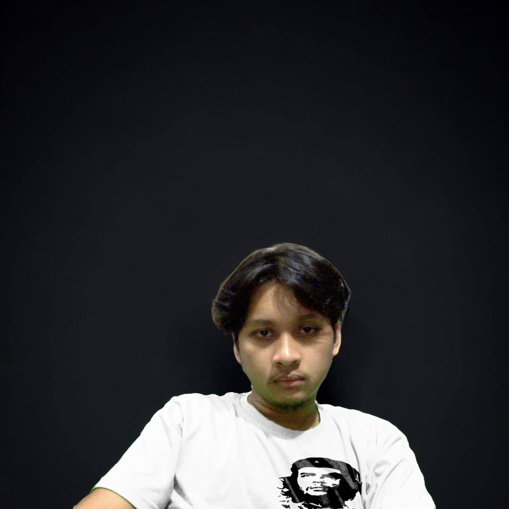

Ren Laureanne G. Perandos
Developer
The Creator of this website. Due to his curiosity he was able to make and brainstorm tons of
ideas and knowledge that he watched
on several platforms, until he made this one.
Marc V. Salamanca
Co-Developer
The assistant, suggesting and telling the developer some ideas
about what should be the next move and what changes should he make.
Kenny Fazbear
Manager
The developer's alter ego, this is his inner self when he is in the zone,
and is too focused on what he is doing. He is the reason why the devoper is so unique and inspired.